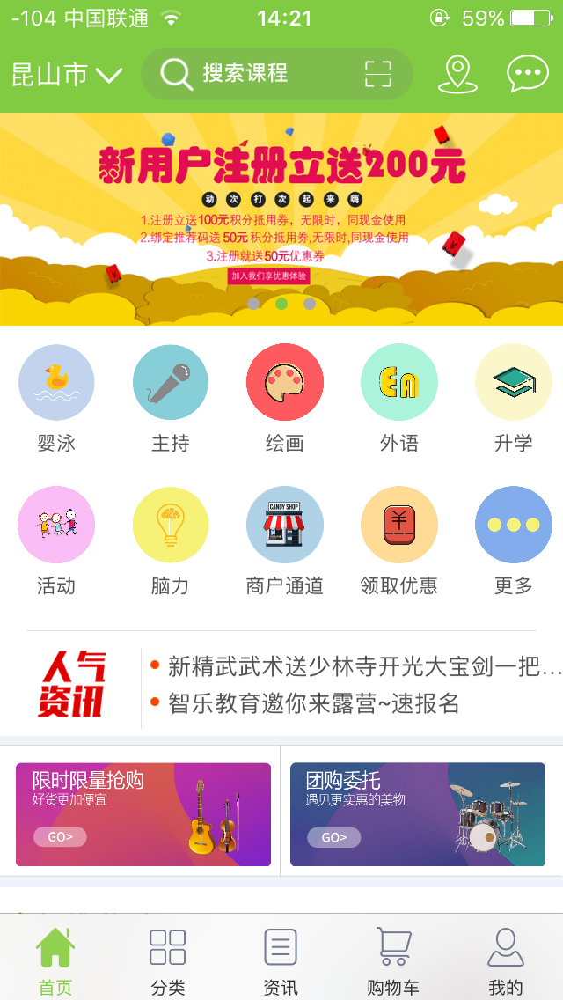
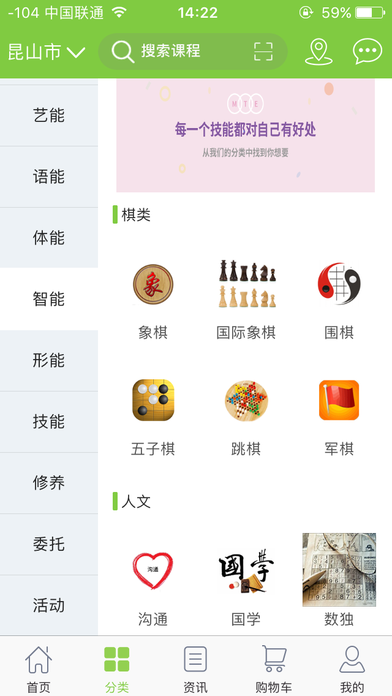

-
工作职责
1.担任该项目的项目经理，客户进行沟通，确认需求。
2.根据需求出具原型和交互图，确认之后出UI设计图。
3.搭建iOS版本APP的框架，协助开发人员完成开发任务。
4.把控项目进度，按阶段交付与客户验收。 -
使用技术
1.APP使用OC作为主要开发语言。
2.整体架构是MVC
3.APP搭建界面以xib为主，同时也使用了masonry。
4.使用AFN作为网络请求工具，数据交互格式为json。
5.使用YYKit里面的模型转换和图片缓存工具。
6.使用高德地图SDK实现商家位置展示和距离计算，导航到指定商家。